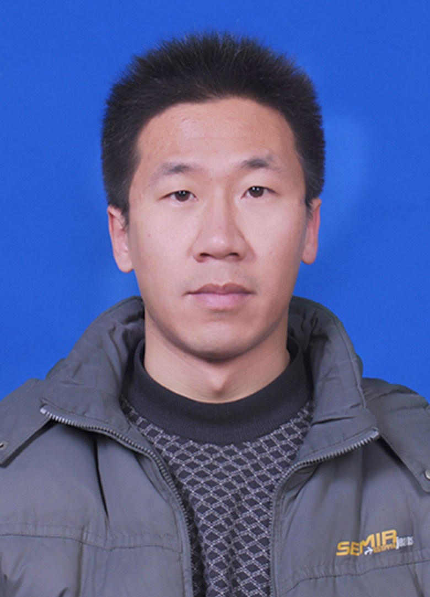

|  | 副教授,中共党员 |
现在是河北经贸大学数学与统计学院一名副教授, 博士毕业于北京理工大学 数学与统计学院。
研究兴趣: 非线性演化方程, 对称，守恒律，孤立子，非线性波 等。
博士 北京理工大学 (2013.09 ~ 2017.06)
|
硕士 聊城大学 (2010.9 ~ 2013.7)
|
联合培养博士 加拿大英属哥伦比亚大学 (2014.09 ~ 2015.09)
|
联合培养博士 美国德克萨斯大学 (2015.12 ~ 2016.12)
|
副教授 河北经贸大学 (2021.11 ~ 至今) |
讲师 河北经贸大学 (2017.07 ~ 2021.10) |
Perturbation, symmetry analysis, Backlund and reciprocal transformation for the extended Boussinesq equation in fluid mechanics
Gangwei Wang(Corresponding Author), Abdul-Majid Wazwaz
Communications in Theoretical Ph ysics
(CTP), 73 ( 2021 ) 045003 [SCI]
Symmetry analysis, analytical solutions and conservation laws of a generalized Kdv–Burgers–Kuramoto equation and its fractional version
Gangwei Wang(Corresponding Author),
FRACTALS-COMPLEX GEOMETRY PATTERNS AND SCALING IN NATURE AND SOCIETY
(FRACTALS), 29 (2021) 2150101 [SCI]
A new (3 + 1)-dimensional SchrOdinger equation: derivation, soliton solutions and conservation laws
Gangwei Wang(Corresponding Author),
Nonlinear Dynamics
(NODY), 104 (2021)1595–1602 [SCI]
A novel (3+1)-dimensional sine-Gorden and a sinh-Gorden equation: Derivation, symmetries and conservation laws
Gangwei Wang(Corresponding Author),
Applied Mathematics Letters
(AML), 113 (2021) 106768 [SCI]
A (2+1)-dimensional sine-Gordon and sinh-Gordon equations with symmetries and kink wave solutions
Gangwei Wang(Corresponding Author), Kaitong Yang, Haicheng Gu, FeiGuan, A.H.Kara
Nuclear Physics B
(NPB), 953 (2020) 114956 [SCI]
A (2+1)-dimensional KdV equation and mKdV equation: Symmetries, group invariant solutions and conservation laws
Gangwei Wang(Corresponding Author), A. H. Kara,
Physics Letters A
(PLA), 383 (2019) 728-731 [SCI]
Group analysis, fractional explicit solutions and conservation laws of time fractional generalized Burgers equation
Gangwei Wang(Corresponding Author), A. H. Kara,
Communications in Theoretical Physics
(CTP), 69 (2018) 5–8 [SCI]
An analysis of the fourth-order PDEs – ‘patterns’ and ‘di-block polymers’
T. Phidane, A. H. Kara, Gangwei Wang(Corresponding Author)
Mathematical Methods in the Applied Sciences (MMAS), 40 (2017) 5141-5146 [SCI]
Symmetry analysis and rogue wave solutions for the
(2 + 1)-dimensional nonlinear Schrodinger equation with variable
coefficients
Gangwei Wang
Applied Mathematics Letters (AML), 56 (2016) 56–64 [SCI][PDF]
Lie symmetry analysis, nonlinear self-adjointness and conservation laws to an extended (2+1)-dimensional Zakharov–Kuznetsov–Burgers equation
Gangwei Wang, K.Fakhar,
Computers & Fluids (CAF), 119 (2015) 143-148, [SCI][PDF]
Solitons and Lie group analysis to an extended quantum
Zakharov–Kuznetsov equation
Gangwei Wang, et.al.,
Astrophysics and Space Science (ASS), 349 (2014) 317–327, [SCI][PDF]
Singular solitons, shock waves, and other solutions to potential KdV equation
Gangwei Wang, et.al.,
Nonlinear Dynamics(NODY), 349 (2014) 317–327, [SCI][PDF]
Lie symmetry analysis to the time fractional generalized fifth-order KdV equation
Gangwei Wang, Xiqiang Liu, Yingyuan Zhang
Communications in Nonlinear Science and Numerical Simulation (CNSNS), 18 (2013) 2321-2326. [SCI][PDF]
Symmetry reduction, exact solutions and conservation laws of a
new fifth-order nonlinear integrable equation
Gangwei Wang, Xiqiang Liu, Yingyuan Zhang
Communications in Nonlinear Science and Numerical Simulation (CNSNS), 18 (2013) 2313-2320. [SCI][PDF]
若干非线性发展方程的对称及应用(No. C20221021)
负责人; 2022.07-2024.06
河北省三三三人才工程资助项目
分数阶薛定谔方程的对称、不变解及守恒律的研究(No. A2018207030)
负责人; 2018.01-2020.12
河北省自然科学基金委青年基金